block(块级元素)
- 块级元素(div、section、p、nav、aside、main…………)默认在静态文档流中，都是垂直堆叠(从上到下排列)——也就是display:block
- 块级元素后续可以通过属性display更改(block[块级元素]、inline[内联元素]、flex[弹性布局]、grid[网格布局])
-
- address使用场景：作者/联系信息(默认状态为斜体)可以使用属性font-style:normal[改为不倾斜状态]
inline(内联元素)
- 内联元素(span、img、br、mark、i………………)默认在静态文档流中，都是在行框内水平排列，当行框宽度不足时，整个元素会移动到下一行继续水平排列——也就是display:inline
- 内联元素后续可以通过属性display更改
-
-
内联元素——初始状态为斜体(同样可以使用属性font-style:normal[改为不倾斜状态])
em使用场景：需要强调的词语(默认状态为斜体)
cite使用场景：书籍、电影、文章标题(默认状态为斜体)
dfn使用场景：首次定义术语时(默认状态为斜体)
var使用场景：数学公式、编程变量(默认状态为斜体)
-
flex(弹性布局)
- 任何容器元素+display:flex = flex容器
- flex容器的直接子元素 = flex项目
- 它可以是body或任何你想要用于布局的容器元素
-
flex最重要的概念(牢记)——flex容器相关属性
-
定位flex项目的两条轴线(主轴和交叉轴)
flex-direction值 主轴方向与起点 交叉轴方向 justify-content(控制) align-items(控制) 视觉类比 row(默认) 水平，从左到右 垂直，从上到下 水平排列分布 垂直对齐 横排书架上放书 row-reverse 水品，从右到左 垂直，从上到下 水平排列分布 垂直对齐 横排书架上放书，但是从右开始放 column 垂直，从上到下 水平从左到右 垂直排列分布 水平对齐 竖排书架上放书 column-reverse 垂直，从下到上 水平从左到右 垂直排列分布 水平对齐 竖排书架上放书，但从底端开始放 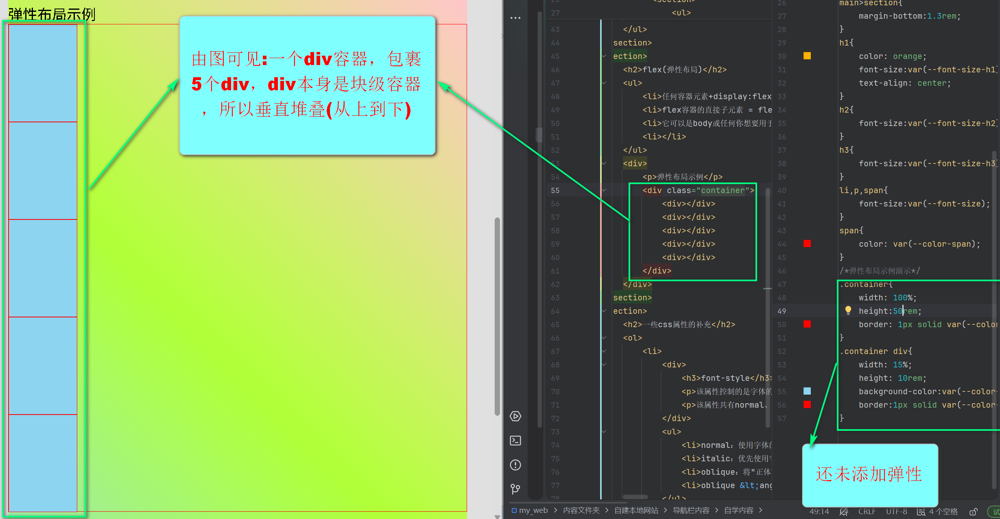

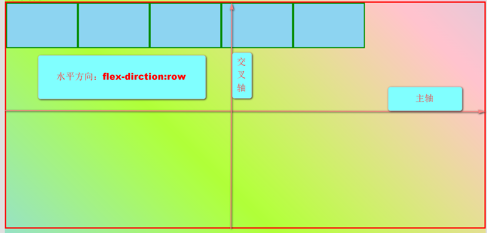
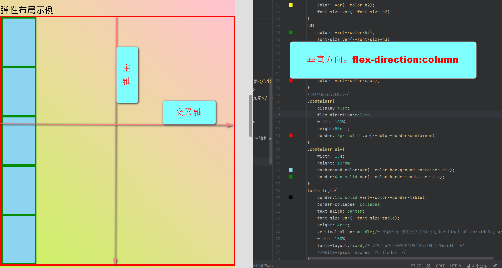
-
flex-direction
- 主要有：row(默认)、row-reverse、column、column-reverse四个值
- 主要控制的是主轴方向(即所有flex项目会沿着主轴进行排列)
-
justify-content
该属性永远以主轴为核心
- 主要有：flex-start项目对齐到主轴的起点
-
值 作用 注意事项 图例 flex-start 把flex项目对齐到主轴的起点 会受到flex-direction影响
当值为row时：主轴的起点是最左边
当值为row-reverse时，主轴的起点是最右边
当值为column时，主轴的起点是最上面
当值为column-reverse时，主轴的起点是最下面")
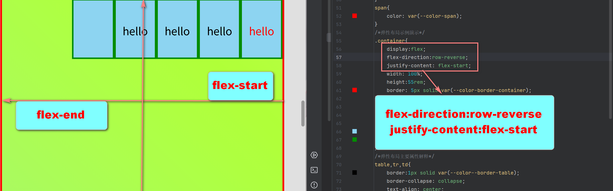
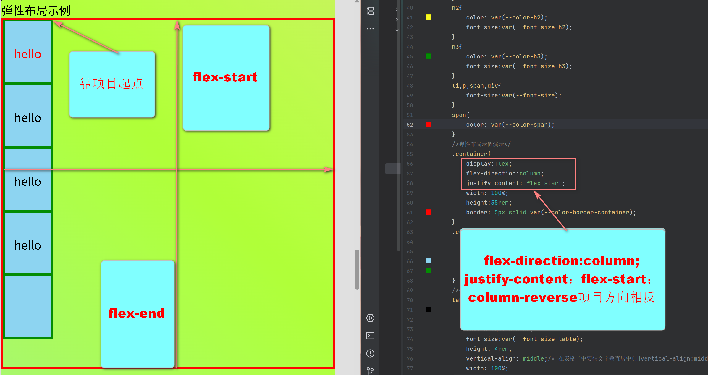
")
flex-end 把flex项目对齐到主轴的终点 会受到flex-direction影响
当值为row时：主轴的起点是最右边
当值为row-reverse时，主轴的起点是最左边
当值为column时，主轴的起点是最下面
当值为column-reverse时，主轴的起点是最上面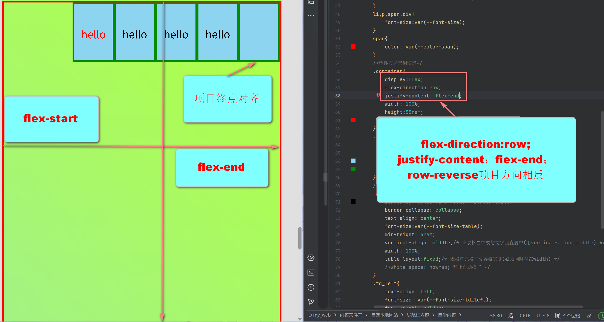
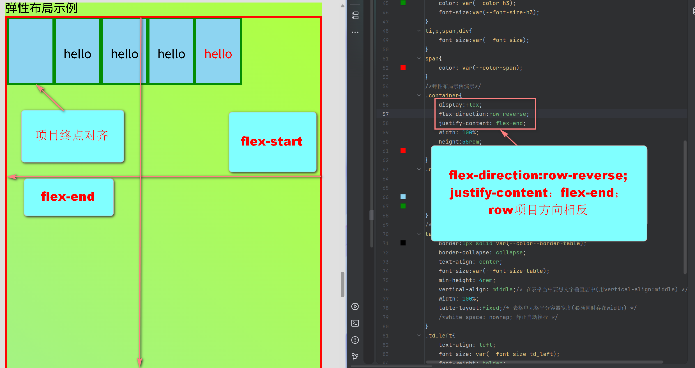
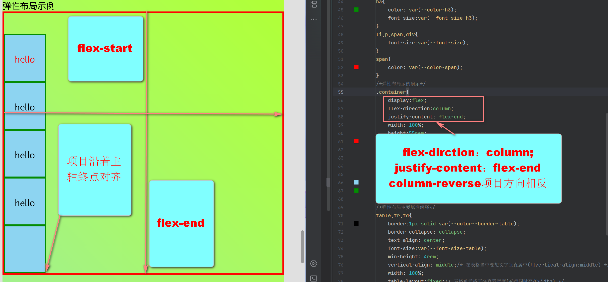
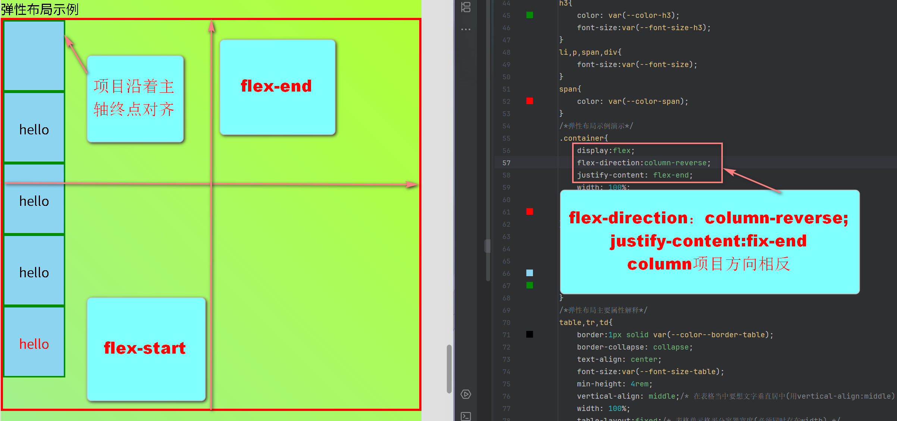
center 把flex项目在主轴上居中 会受到flex-direction影响
当值为row、row-reverse时：水平居中，但是项目方向会受两值的变化，不影响居中的效果。
当值为column、column-reverse时，垂直居中，但是项目方向会受两值的变化，不影响居中的效果。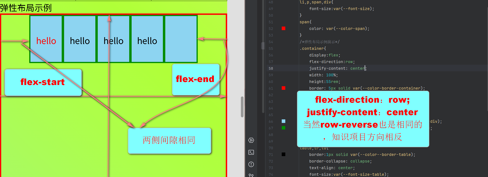
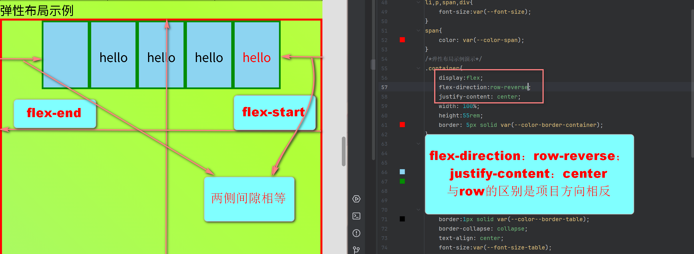
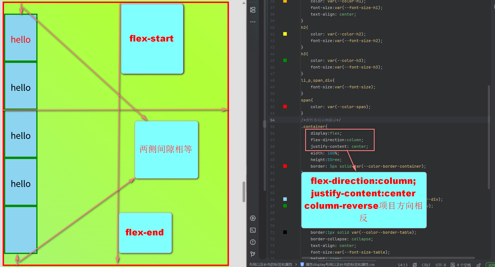
")
space-between 沿着主轴方向最边上的项目(即最左边项目，和最右边项目)，紧贴flex容器两侧，其余空间由剩下的项目平分
处理步骤：第一个项目贴在主轴起点，最后一个项目贴在主轴终点，剩余空间被项，项目之间的间隙平分会受到flex-direction影响
当值为row、row-reverse时，项目方向会受两值的变化。
当值为column、column-reverse时，项目方向会受两值的变化。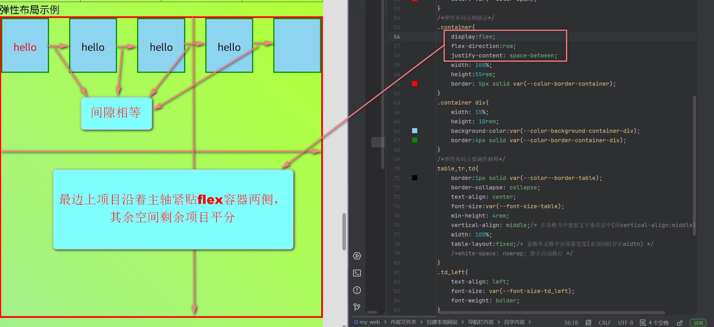
")
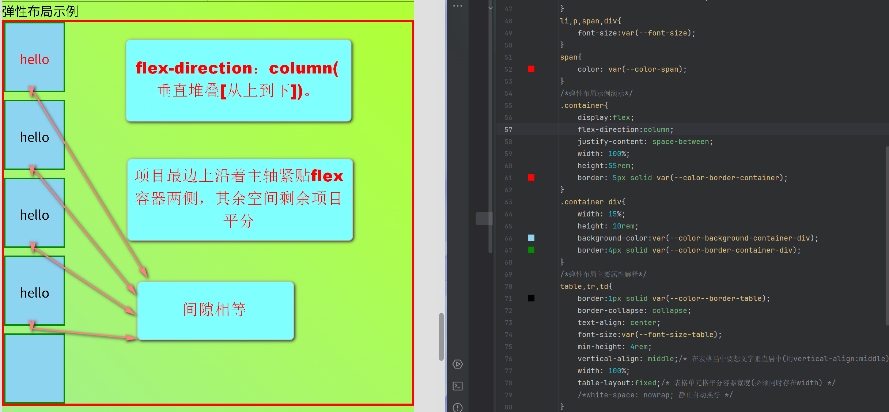
")
space-around 沿着主轴方向最边上的项目(即最左边项目，和最右边项目)，离flex容器两侧有一定距离，其余空间由剩下的项目平分
处理步骤，将容器主轴空间等分给每个项目及其两侧的间隙，每个项目获得相同大小的周围空间，相邻项目的间隙会叠加，视觉效果：相邻项目的间隙是两侧的两倍会受到flex-direction影响
当值为row、row-reverse时，项目方向会受两值的变化。
当值为column、column-reverse时，项目方向会受两值的变化。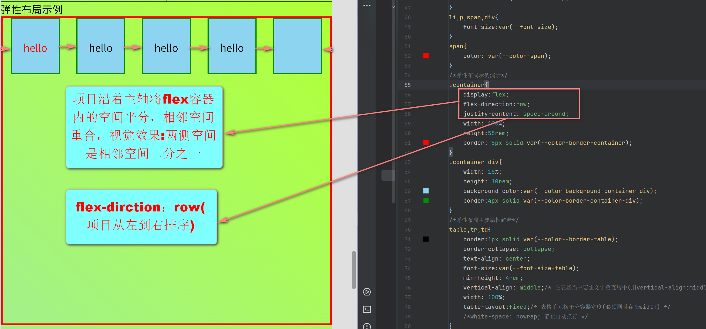
")
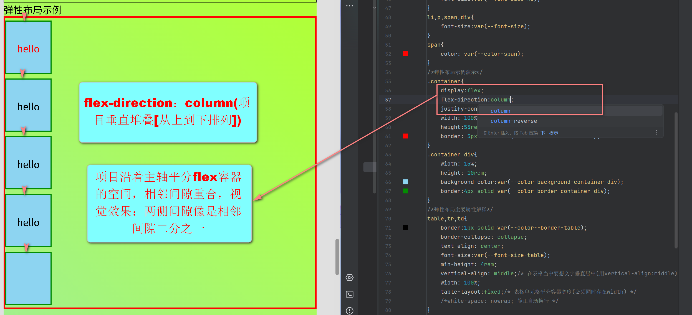
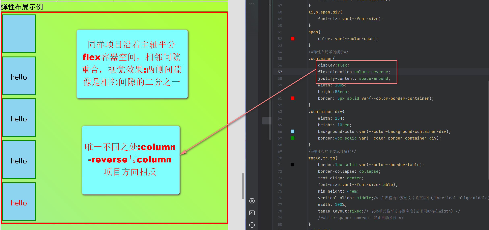
space-evenly 将flex容器所有的空间，给项目平分(包括两侧)
处理步骤，将flex容器空间等分给所有间隙，间隙数量=项目数量+1,所有间隙大小相等(包括容器边缘)，视觉效果：所有间隙相等会受到flex-direction影响
当值为row、row-reverse时，项目方向会受两值的变化。
当值为column、column-reverse时，项目方向会受两值的变化。")
")
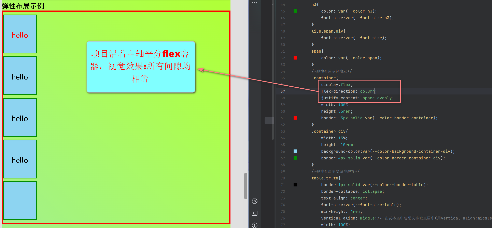
")
-
align-items
- 该属性永远以交叉轴为核心
- 与justify-content同样有：flex-start、flex-end、center
- 唯一的区别就是justify-content以主轴，align-items以交叉轴
- 以上的属性都会受到flex-direction的值影响(影响的状态与justify-content一样)
- flex-start:沿着交叉轴起点对齐
- flex-end:沿着交叉轴终点对齐
- center:沿着交叉轴居中对齐
-
gap
- 它可以在flex项目之间创建间距
- 使用它，在flex布局中基本不用再需要通过margin来制造间距
-


-
flex-wrap
- 使flex布局实现响应式布局
- 主要由:wrap、nowrap两值构成
- 当实现换行时，这时每一行都会有主轴与交叉轴
-
两值具体使用环境
-
wrap：当flex容器空间不足时，flex项目会自动排列到下一行
·当使用wrap值时，随着flex容器缩小，项目会自动换行，以保证里面的内容能正常显示(这样就实现了响应式布局)

-
nowrap：默认值，项目不会默认换行
·当使用nowrap或不添加flex-wrap(即使默认值)，随着flex缩小，项目会溢出容器，看不到
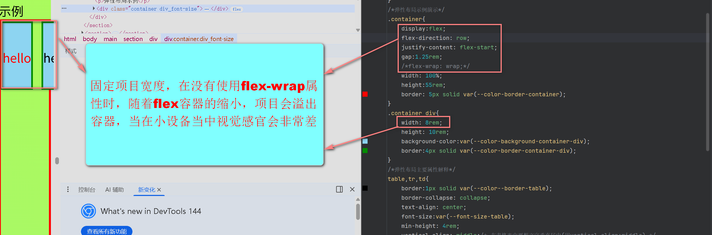
-
·因为每一行都有独立的主轴和交叉轴(这就意味着)
·换行项目的排列会受到(flex-direction、justify-content、align-items影响)
- ·flex-direction:row;justify-content:flex-start;align-items:center;(换行，水平排列，从左到右，主轴项目起点对齐，交叉轴居中对齐)
- ·flex-direction:row;justify-content:flex-start;align-items:flex-end;(换行，水平排列，从左到右，主轴项目起点对齐，交叉轴终点对齐)
- ·flex-direction:row;justify-content:flex-start;align-items:flex-start;(换行，水平排列，从左到右，主轴项目起点对齐，交叉轴起点对齐)
- ·flex-direction:row;justify-content:flex-start;align-items:space-between;(换行，水平排列，从左到右，主轴项目起点对齐，交叉轴项目两端紧靠flex容器两端，其余空间剩余项目平分)
- ·flex-direction:row;justify-content:flex-start;align-items:space-around;(换行，水平排列，从左到右，主轴项目起点对齐，交叉轴项目平分容器空间，相邻项目合并)
- ·flex-direction:row;justify-content:flex-start;align-items:space-evenly;(换行，水平排列，从左到右，主轴项目起点对齐，交叉轴项目平分容器空间)
- ……………………………………………………
一些示例：
-
·flex-direction:row;justify-content:flex-start;align-items:center;
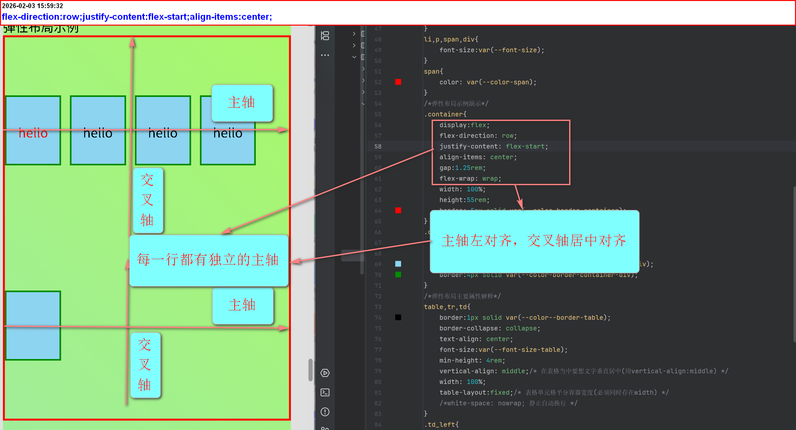
-
·flex-direction:row-reverse;justify-content:center;align-items:center;

-
·flex-direction:column;justify-content:space-between;align-items:center;
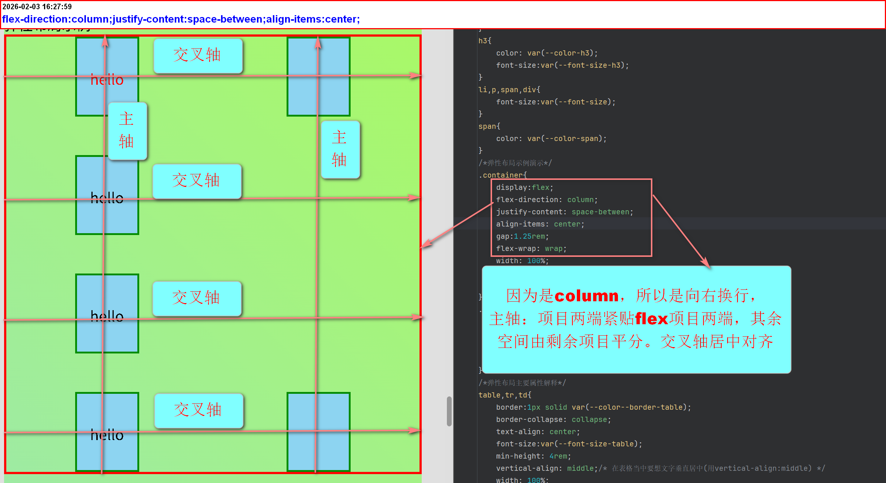
-
·flex-direction:column-reverse;justify-content:space-between;align-items:flex-end;
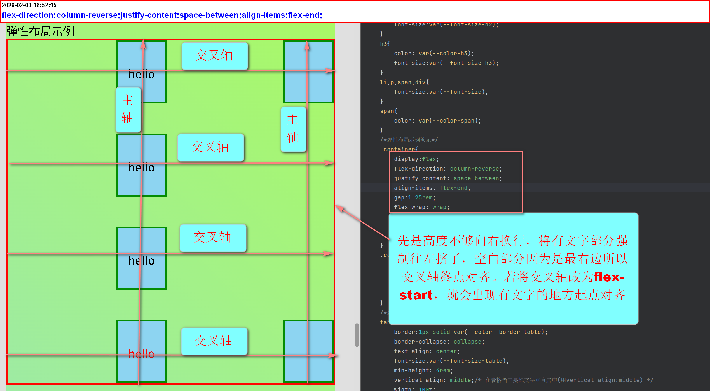
-
·学习时发现的规律
flex-direction 主轴方向 交叉轴方向 换行方向(当flex-wrap：wrap时) 综合结论 row 水平(左→ 右) 垂直(上→ 下) 向下 换行方向是交叉轴的正方向，
row-reverse/column-reverse只是更改主轴方向row-reverse 水平(有→ 左) 垂直(上→ 下) 向下 column 垂直(上→ 下) 水平(左→ 右) 向右 column-reverse 垂直(下→ 上) 水平(左→ 右) 向右
-
-
align-content
- 控制所有行作为一个整体的对齐
- 有:默认值(stretch)、flex-start、flex-end、center、space-between、space-around、space-evenly
- 主要将默认值：stretch(尝试拉伸每一行，来填满交叉轴上的所有可用空间)——其他的都是老朋友了
- 相比[align-items]，align-content控制的是行，align-items控制的是行内的项目
-
-
flex最重要的概念(牢记)——flex项目相关属性
- 正常情况下的排列：项目会随着flex容器收缩而收缩(所以要以下属性控制收缩)
-
项目相关属性
-
flex-shrink
- 当flex容器空间不足时，flex项目相对于其他项目，在主轴方向上"缩小"或"被压缩"的“意愿”和能力
- 简单说，它是一个"收缩权重"，数值越大，项目就"越愿意"牺牲自己的空间来避免语出容器(flex-shrink值越大，它被扣减的空间越多)
- 项目宽度最好是清晰的尺寸单位，如绝对单位(px【但是不建议】相对单位(rem【非常不建议用%】))
-
核心要点
特性 说明 默认值 [1](大多数项目默认可以收缩) 生效条件 仅当当前所有项目的总宽度/高度>容器主轴尺寸时 取值 一个非负数字(可以是小数)。[0]表示"静止收缩" 对比 与flex-grow(分配剩余空间的权重)，是相反的操作 -
示例：

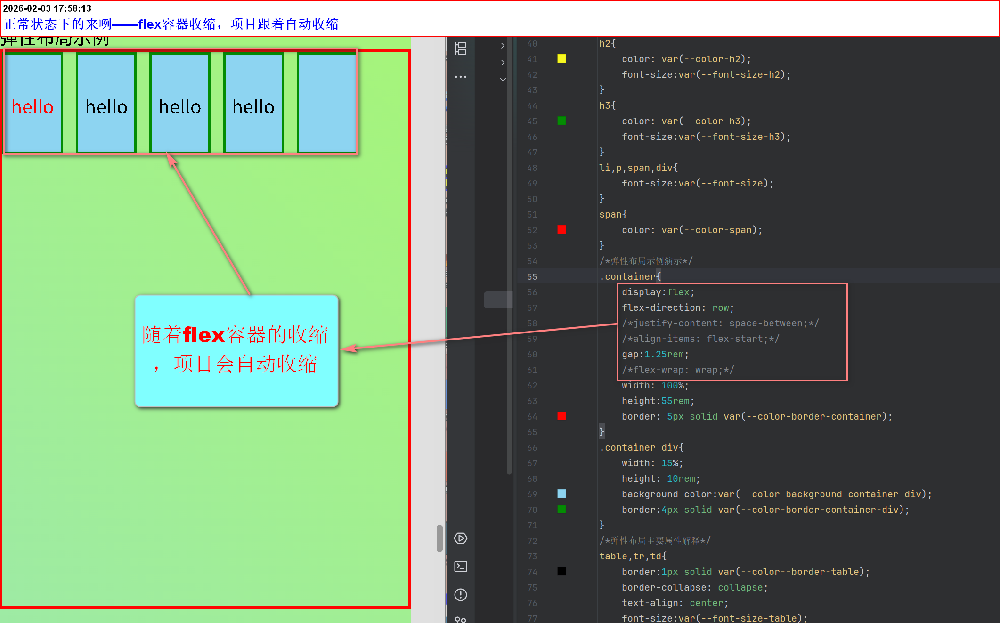

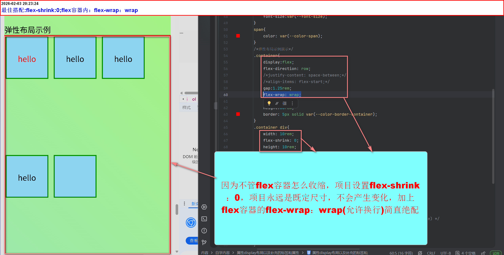
-
总结来说：
- 属性flex-shrink控制项目是否允许收缩(0则不允许)，值越大项目牺牲自己的空间越大
- 当使用 flex-wrap: wrap 时，如果我希望项目在换行后仍然保持固定尺寸，不被压缩，那么需要设置 flex-shrink: 0
- 可以使用选择器单独设置项目是否收缩
- 可以设置最小宽度，当收缩指定宽度的时候，将停止收缩(如果flex容器继续收缩，且不设置自动换行，项目将溢出屏幕)
-
flex-grow
- 主要作用，能使元素自动增长(在主轴上伸展)
- 默认值是0(不自动增长),值越大占据剩余空间的比例越大
-
图例：

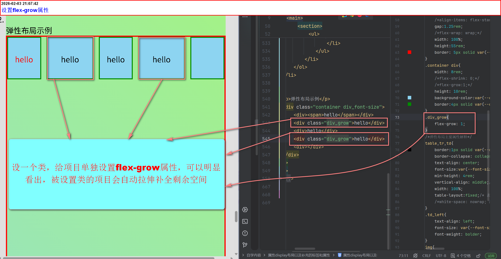
·如图所示：flex-grow: 1 让项目有权按比例分配主轴上的剩余空间。如果它是唯一有 flex-grow 的项目，且没有 min/max-width 限制，那么它会占满所有剩余空间。
·同样可以单独设置
·可以设置最大宽度，当项目拉伸到指定宽度，停止拉伸
-
flex-basis
- 定义flex项目在主轴方向上的初始大小，即在分配剩余空间之前，项目应该占据多大空间
- 类似于width/height
-
但是优先级顺序：
flex-basis > width(在flex布局中)
但是，min-width/max-width 仍然会约束最终尺寸
-
align-self
- 与align-items的区别是它是作用于项目上的
- 它的值有：flex-start、flex-end、center(作用效果是一样的)
- 单项目交叉轴对齐
-
flex-basis、flex-shrink、flex-grow三属性的简写
- 它们简写属性是：flex(作用于项目上)
- 共有三个参数:flex-basis、flex-shrink、flex-grow
- 语法:flex:flex-grow flex-shrink flex-basis[在输入时，参数对应的属性
-
三个参数具体解释：
- flex-grow(必须存在)——放大比例
- flex-shrink(可选)——缩小比例
- flex-basis(可选)——基础尺寸
-
order
- 定义：用于控制flex项目或grid项目在容器中的视觉排列顺序
- 主要属性值为：整数(正整数、负整数、0[默认])
-
核心作用
- 改变项目的显示顺序，而不改变HTML结构
- 实现视觉重排不影响DOM顺序
- 响应式设计中调整不同屏幕尺寸下的项目顺序
- 设置在项目内，不是flex容器
-
主要用途：
- 响应式布局:不同屏幕尺寸下调整项目顺序
- 视觉强调:将重要项目提到前面
- 布局微调:不修改HTML结构的情况下调整顺序
-
与z-index的区别
order与z-index区别 方面 order z-index 本质 布局属性，控制平面新顺序 层叠属性，控制垂直顺序 前提 需要Flex/Grid布局 需要定位(position) 效果 谁在前谁在后 谁在上谁在下 运用 响应式重拍、视觉强调 模态框、下拉菜单、弹出层 相同点 属性 允许的值类型 示例 不允许的值类型 order 整数(integer) 0、1、-1、10 小数、字符串、百分比、关键字 z-index 整数(integer)或auto 0、1、-1、auto 小数(除了auto)、字符串、百分比、关键字
-
-
剩余两个属性值:baseline、stretch
核心解释 值 含义 视觉比喻 常用场景 baseline 所有项目的文本基线对齐 像笔记本的横线，文字都"坐"在同一条线上 表单标签、图标+文字混排、不同大小的按钮 stretch 拉伸以填满交叉轴的整个高度(或宽度) 像弹簧一样拉长，谈满所有空用空间 像高的卡片、导航项、瀑布流布局居中的填充 四属性对baseline和stretch的支持情况 属性 作用对象 支持baseline 支持stretch 原因分析 justify-content 主轴对齐 不支持 不支持 主轴处理项目间空间分布，不处理内容对齐 align-items 交叉轴单行对齐 支持 支持(目前是默认值) 专为交叉轴项目项目设计 align-content 交叉轴多行对齐 不支持 支持 处理行间空间，可拉伸但无法基线对齐 align-self 单个项目交叉轴对齐 支持 支持 继承align-items能力 -
flex-basis、flex-shrink、flex-grow、width/height区别总结
flex-basis、flex-shrink、flex-grow、width/height区别总结 属性 定义 作用时机 flex-basis 项目在主轴上的"起始尺寸" 在分配多余空间之前 width/height 项目的实际尺寸 CSS盒模型中的尺寸 flex-grow 分配多余空间的"扩张比例" 在计算flex-basis之后 flex-shrink 收缩空间不足时的"压缩比例" 在计算flex-basis之后 flex属性分类总结 属性 设置位置 作用 容器属性 父元素 控制所有项目的整体布局 display:flex 容器 创建flex容器 flex-direction 容器 主轴方向 justify-content 容器 主轴对齐 align-items 容器 交叉轴对齐 flex-wrap 容器 换行设置 gap 容器 项目间距 项目属性 子元素 控制单个项目的表现 order 项目 排列顺序 flex-shrink 项目 缩小比例 flex-grow 项目 放大比例 flex-basis 项目 基础尺寸 align-self 项目 单独对齐(交叉轴) flex 项目 flex-shrink、flex-grow、flex-basis简写
弹性布局示例
grid布局
-
grid学习前的准备
-
什么是Grid布局
- 任何容器元素+display: grid = grid 容器
- grid 容器的直接子元素 = grid项目
- grid布局是一个强大的二维布局模型
-
grid布局基础
-
网格线
·每个网格之间的线叫网格线
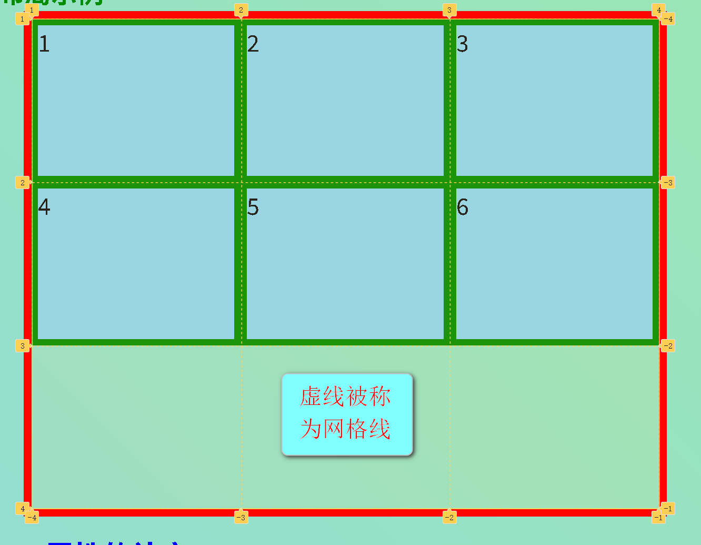
-
行线
·水平方向的是行线
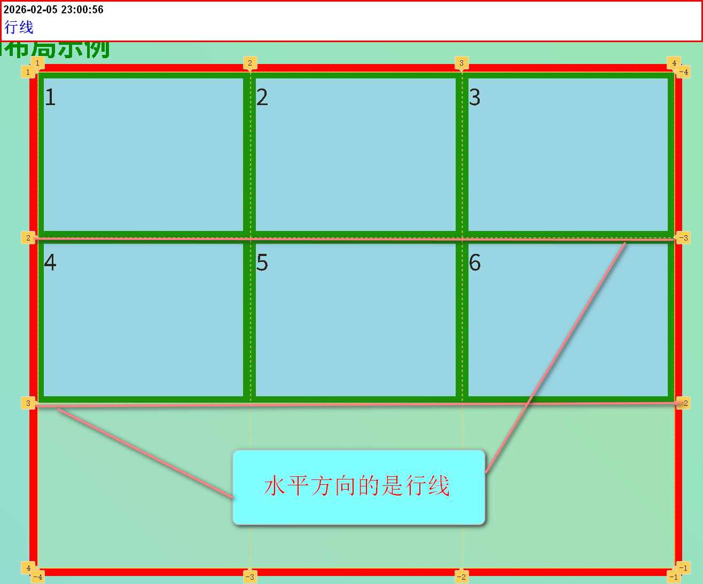
-
列线
·垂直方向的线叫列线
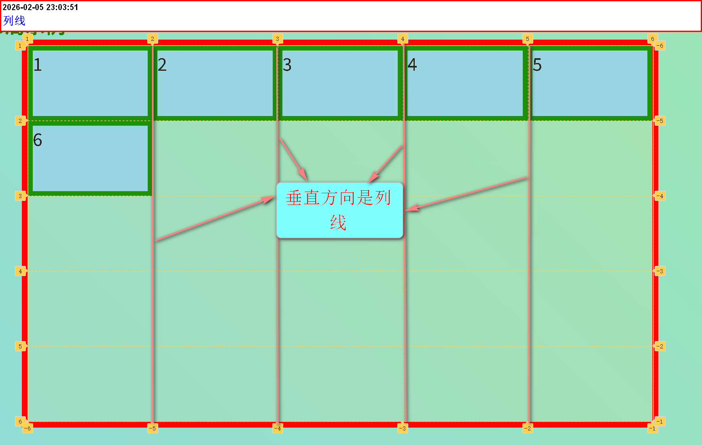
-
网格轨道
- 单方向组成的网格空间叫网格轨道
-
水平方向叫行轨道(由grid-template-rows控制)
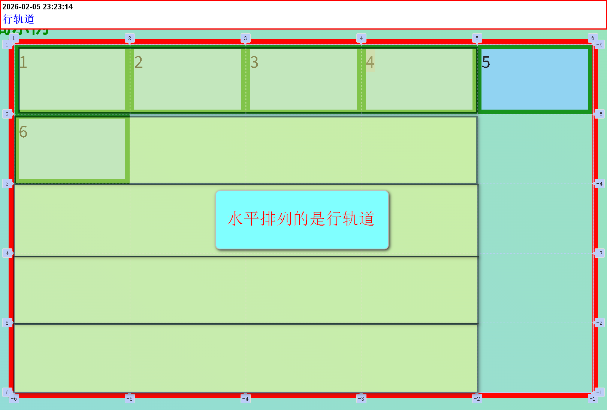
-
垂直方向叫列轨道(由grid-template-columns控制)
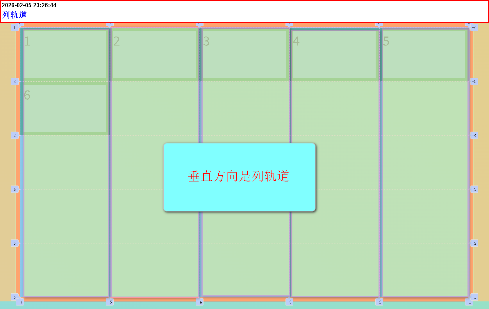
-
网格单元
·行轨道与列轨道相交的地方叫网格单元
·默认情况下一个项目占一个单元
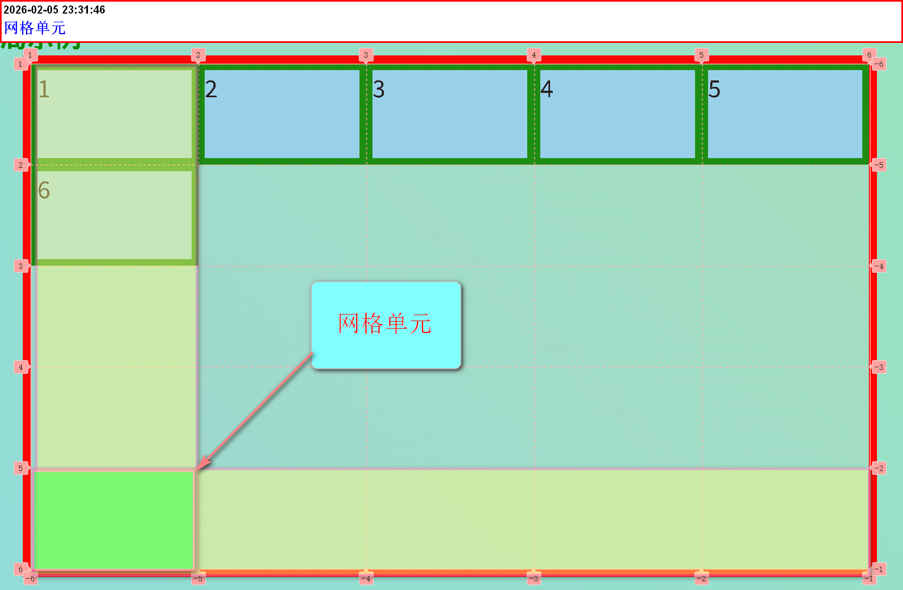
-
-
-
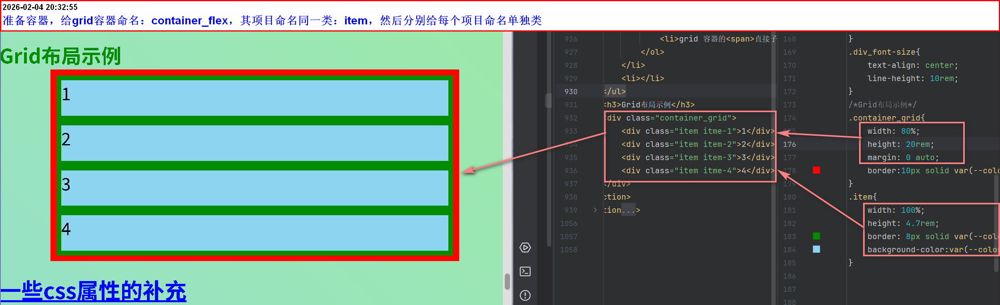
·了解什么是grid容器，什么是grid项目以及怎么开启grid布局
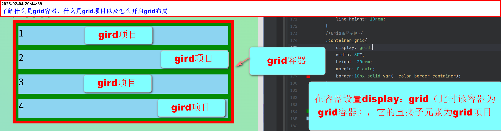
学习之前必须理清何为列(column)和为行(row) 中文 行 列 查找方法 英语 row column column(行)：从上往下数，或从下往上数，row(列)：从左往有数，或从右往左数 对应单元格 垂直 水平 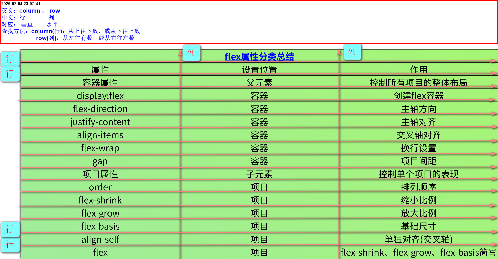
-
grid布局用到的属性
-
grid-template-columns
- 主要作用是：设置grid布局包含多少列(column)，定义列宽
- 语法：grid-template-columns:[数值][数值][数值]{有多少参数，就有多少列}
- 数值单位可以是:相对单位(%、vw、vh、rem、em、ch[字符宽度]、vmin,vmax))、绝对单位(px、pt、cm、mm、in)以及最重要的网格专属单位(fr[分数单位{分配剩余空间的比例}]、也可以使用函数[minmax()、repeat())
- 当没有定义任何列(column)时，grid会根据内容自动决定列宽
-
grid的默认行为是按行(row)来排列项目
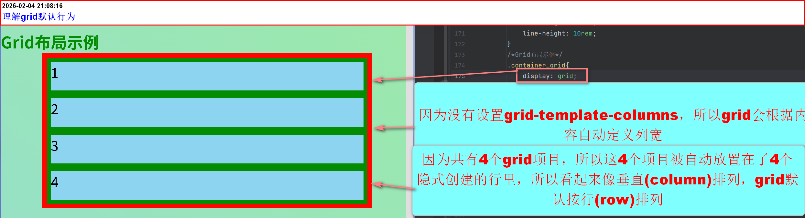
-
grid-template-rows
- 主要作用是：设置grid布局包含多少行(row)，定义行高
- 语法：grid-template-rows:[数值][数值][数值]有多少参数，就有多少行
- 数值单位可以是:相对单位(%、vw、vh、rem、em、ch[字符宽度]、vmin,vmax))、绝对单位(px、pt、cm、mm、in)以及最重要的网格专属单位(fr[分数单位{分配剩余空间的比例}]、也可以使用函数[minmax()、repeat())
- 当没有定义任何行(row)时，grid会根据内容自动决定行高
-
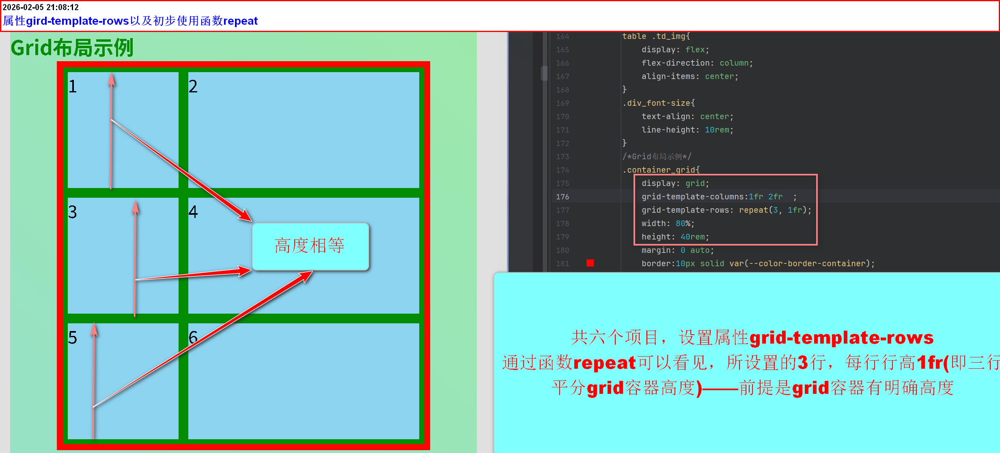
-
gap
- 主要作用：为单元格之间创建间距(非常推荐使用gap)
- 可以取一个值，也可以取两个值
- 取一个值：同时为行/列添加间距
- 取两个值：第一个值为行添加间距，第二个值为列添加间距
-
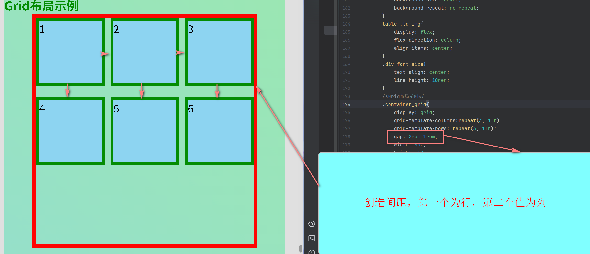
-
学会如何控制网格轨道
-
方法一：通过四个属性控制(注意：作用于项目，而非容器)方法二
- grid-row-start:控制网格轨道的起点(行线)
- grid-row-end:控制网格轨道的终点(行线)
- grid-column-start:控制网格轨道的起点(列线)
- grid-column-end:控制网格轨道的终点(列线)
-
以上所有参数遵守以下规则：
- 所有参数均不能为0
- 所有参数都不能是小数(只能是正整数、负整数)
- 在start与end的值同为正整数(或同为负数)时，end的值永远大于start的值
- 当start与end非同正，同负时，start的值用于大于end的值【start为1，end为-1,意思是该项目占整行/整列】
-
·占据的轨道数=end-start
·占据的网格单元数=行轨道数*列轨道数
- 该项目的具体空间=占据的网格单元数
-
具体示例(4个属性同时设置[end为正整数])：
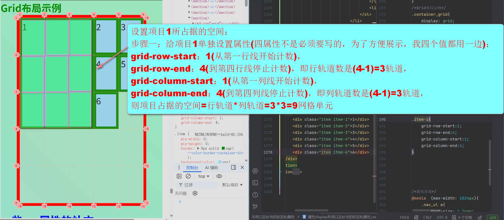
-
方法二：四属性简写
-
·grid-row-start和grid-row-end简写是：grid-row
grid-column-start和grid-column-end简写是：grid-column
·第一个值为start，第二个值为end中间[
/]隔开-
使用行线与列线分配
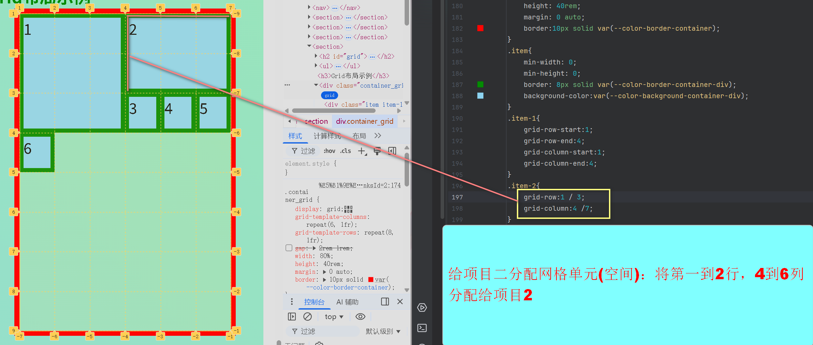
-
还可以使用关键子
span:- 指定横跨网格轨道数
- span的值不能是负数和零，只能是正整数
-
单独使用：
- 起点：由浏览器自动放置算法决定[项目当前位置]
- 方向:默认正方向(列向右，行向下)
- 跨度:指定的数量
-
start与end同为正数
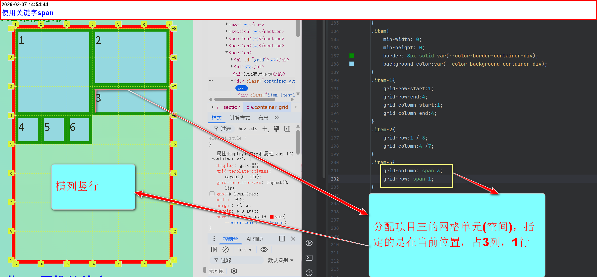
start与end非同正同负
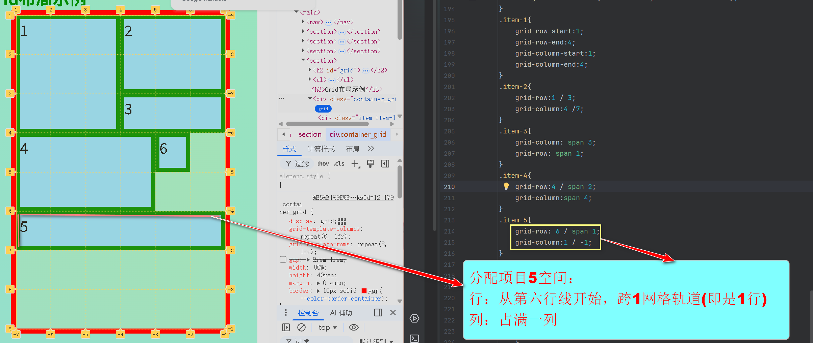
-
与起点一起使用
- 语法：grid-row/grid-column:
start / span 指定跨轨道数量 - 意思是从值start开始跨网格轨道，默认列向右，行向下
-
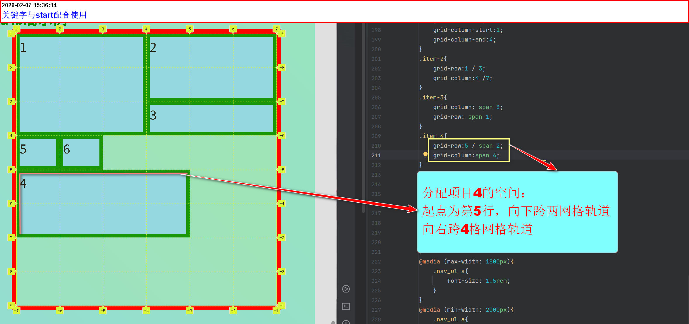
- 语法：grid-row/grid-column:
-
-
-
-
- 其实就跟position(定位一样)，但是这会是脱离文档流，造成高度坍缩等问题
- 使用grid布局，可以通过指出相同的网格区域，来让项目重叠
- 当然也可以使用z-index来调整重叠的顺序
-
图例正常素材：
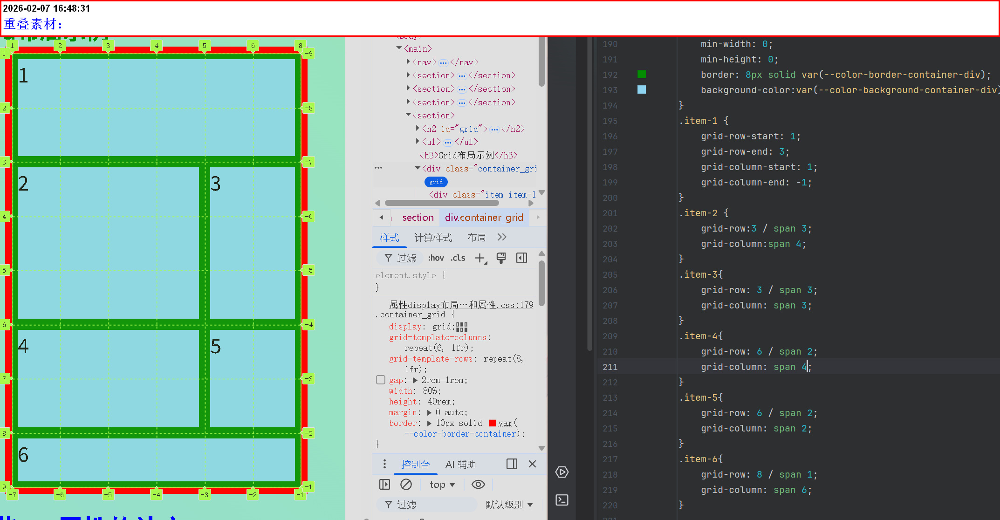
重叠示例一：
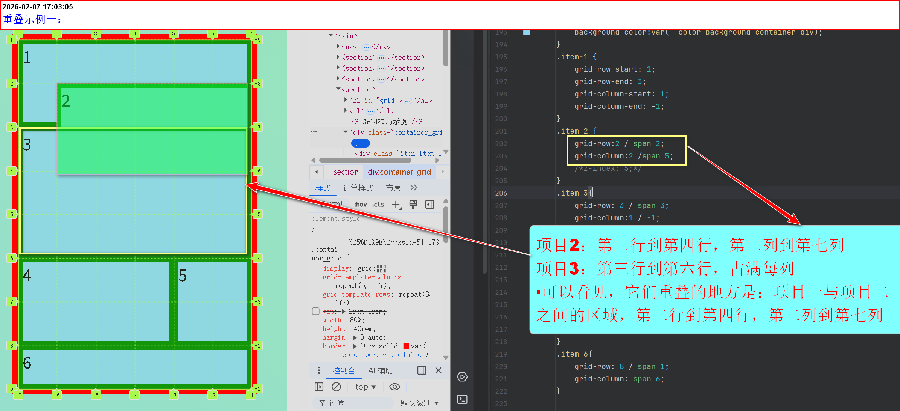
使用z-index重置重叠顺序：
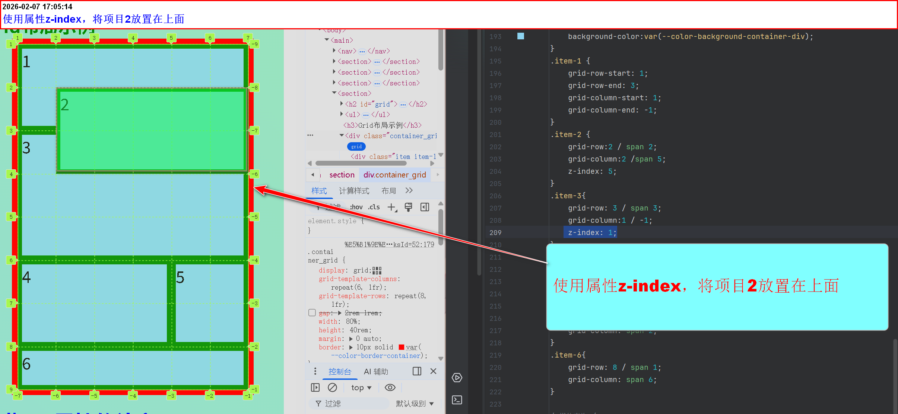
-
grid-template-areas与grid-areas
- 属性grid-template-areas作用在grid容器主要作用是：为每个项目(轨道)命名
- 属性grid-area作用在项目主要作用是：采用容器(grid-template-areas)的命名
- grid-template-areas是通过文本矩阵定义网格区域布局的系统，他必须与grid-template-columns/rows的行数/列数严格对应
-
核心规则：
- 一行一引号：每个字符串(引号内)对应一行
- 一列一名称：字符串内每个名称对应一列，空格分割
- 同名合并：相同名称的相邻单元格会自动合并成一个区域
- 空白用点：不需要命名的地方的单元格用.表示
- 超出隐式：项目数量 > 命名单元格时，自动创建隐式网格轨道(行高由内容决定，列宽占一列)
- 隐式轨道尺寸：由grid-auto-rows/columns控制(未设置则默认auto)
- 命名规范：区域名称可以是任何有效字符串，但不能是
span或数字 -
案例：
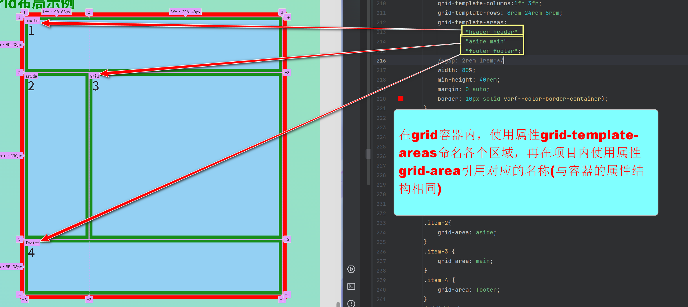
核心规则演示：
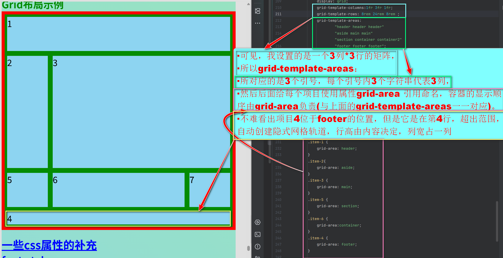
相邻合并:
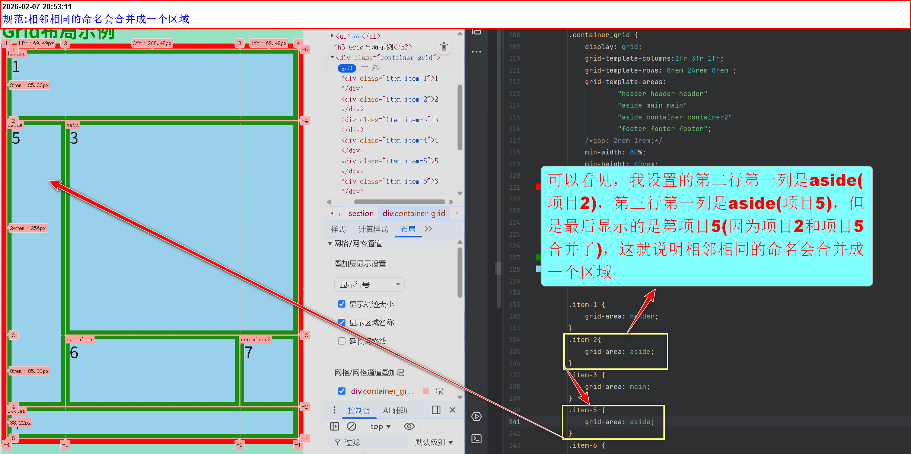
-
grid-auto-rows/columns
- 该属性是控制隐式网格轨道的行高和列宽
- 与grid-template-columns/grid-template-rows的区别是无法创建列数和行数
-
图例：
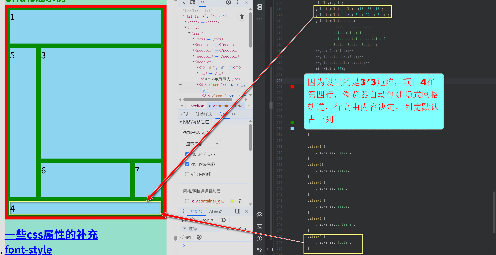
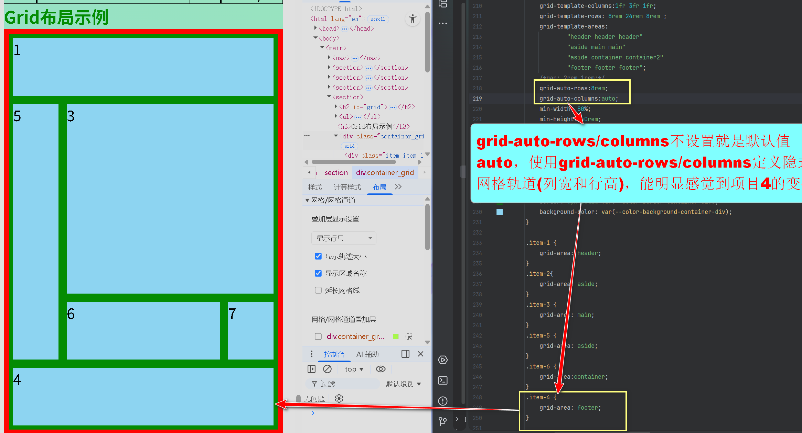
注意的小bug：
按道理来说，当项目超出grid-template-columns/rows，浏览器会自动创建隐式网格轨道，
依照规则:隐式网格轨道在没有设置grid-auto-rows/columns，它是默认auto。
这会导致，行高与内容高度平齐，列宽由内容的多少决定(内容越多，列宽被撑开，就越宽，还会溢出容器)
但是以上项目4因为被命名(grid-area:footer)强制塞进了显示轨道中，这也就解释了为什么列宽占满整列宽度，因为它继承了怎么footer的宽度。
并且在grid-template-areas中footer排在第四行，但是grid-template-rows却只是设置3个参数，代表3行，这会导致第四行的行高由grid-auto-rows默认值决定
所以创建隐式轨道的前提是：项目数量 > 显示网格轨道 且没有被命名最后因为这个BUG，总结:grid-template-columns/rows与grid-template-areas的严谨性，搞错一个，便是天差地别，grid-area不正当用会影响隐式网格轨道的创建，导致维护困难
演示修正
-
grid-auto-flow
- grid-auto-flow用于控制隐式网格轨道的方向
- 它的默认值是：row(这也就是为什么默认创建的是隐式行轨道)
-
自学时发现
- 当grid-auto-flow值为row时，grid-auto-columns无效
- 当grid-auto-flow值为column时，grid-auto-rows无效<
-
通过查询有以下原因
- 实际上，grid-auto-rows/columns本身并不是”无效“，而是：
·它们只会在需要创建相应隐式轨道时被使用
·创建那种隐式轨道由项目放置方式和grid-auto-flow共同决定关于grid-auto-flow需要注意的事项 情景 grid-auto-rows生效条件 grid-auto-columns生效条件 自动放置(grid-row/column)、grid-area、grid-row-start/end、grid-column-start/end grid-auto-flow：row或dense,且项目数量超出显示行grid-auto-flow：column,且项目数量超出显示列手动放置 项目被手动放置到显示网格之外的行 项目被手动放置到显示网格之外的列 混合情况 grid-auto-column但项目被手动放到新行grid-auto-row但项目被手动放到新列 -
示例：grid-auto-flow:row于grid-auto-rows<
示例：grid-auto-flow:column于grid-auto-columns
- 实际上，grid-auto-rows/columns本身并不是”无效“，而是：
-
使用它的前提是：
- 有项目无法放入显示定义的网格中
- 没有明确为所有项目指定位置(grid-area)
-
网格布局中的对齐方式
- grid容器属性
-
-
justify-items
- 控制项目在网格单元内水平方向对齐
- 值有:stretch(默认)、start、end、center
-
- 所有操作空间都是在项目网格单元内
- stretch：项目拉伸与占据网格单元内所有可用空间(填满水平方向整个网格单元)
- start：项目对齐左边(对齐网格单元最做左边)
- end:项目对齐右边(对齐网格单元最做有边)
- center:在水平方向居中(对齐网格单元中间)
-
align-items
- 控制项目在网格单元内垂直方向对齐
- 作用在grid容器上
- 值有:stretch(默认)、start、end、center
-
- 所有操作空间都是在项目网格单元内
- stretch：项目拉伸与占据网格单元内所有可用空间(填满垂直方向整个网格单元)
- start：项目对齐左边(对齐网格单元最做上面)
- end:项目对齐右边(对齐网格单元最做下面)
- center:在水平方向居中(对齐网格单元中间)
-
-
-
justify-self-作用在项目上
- 控制单个网格单元内水平方向对齐
- 值同样有：stretch、start、end、center
-
align-self-作用在项目上
- 控制单个网格单元内垂直方向对齐
- 值同样有：stretch、start、end、center
-
-
-
- 控制所有项目在水平方向对齐方式
- 值有：start、end、center、space-between、space-evenly、space-around
- 所有值与flex布局相同
-
- 控制所有项目在垂直方向对齐方式
- 值有：start、end、center、space-between、space-evenly、space-around
- 所有值与flex布局相同
-
-
总结
- *-item:单个项目对齐，调整网格项目在其自身单元格内部的位置
- *-content：整体玩个够的对齐，调整所有网格轨道作为一个整体在容器中的位置。(当容器有剩余空间时生效)
-
常用的值[响应式]
-
auto-fit
- 效果一：当容器空间不足以容纳所有项目时，会自动减少列数，让项目换行
- 效果二：当容器足够宽是，多于的空间，会按设置的列宽平均分给所有项目
- 最好搭配：minmax()使用
-
auto=fill
- 效果一：当容器空间不足以容纳所有项目时，会自动减少列数，让项目换行
- 效果二：当容器足够宽是，多于的空间，会按设置的列宽平均分给所有项目,当容器宽度大到所有项目分配完还有剩余空间，会新建轨道(可能会留白)
- 最好搭配：minmax()使用
-
总结：
- auto-fit:折叠空轨道，项目可能被拉伸，但容器内没有留白
- auto-fill:保留空轨道，项目不被拉伸，容器内可能留白
-
-
-
布局中可能的疑问
-
当容器内的项目超过所设置的网格数会发生什么？
当项目数量 > 显式网格单元格数时：
- 按"行优先"方向排列（默认grid-auto-flow: row）
- 创建隐式行来容纳多余项目
- 隐式行的列数继承grid-template-columns设置
- 隐式行高默认由内容决定（可通过grid-auto-rows控制）
-
grid专属单位fr(分数单位)
- fr是
fraction(分数)的缩写，是CSS Gird布局中独有的单位，用于按比例分配剩余空间 - 计算时先扣除所有固定尺寸
- 可以与minmax()、repeat()等函数结合使用
- 需要容器有明确尺寸才能计算
- fr是
-
属性grid-template-columns/grid-template-rows失效的几种状况/解决方法
属性grid-template-columns/grid-template-rows失效的几种状况/解决方法 序号 失效状况 原因分析 解决方案 1 容器没有明确尺寸 fr单位依赖剩余空间分配，当容器尺寸为auto时，剩余空间为0，fr无法生效 给容器设置明确的width/height或min-width/min-height 2 项目固定尺寸覆盖 grid项目的width/height/min-width/min-height优先级高于轨道尺寸 删除项目的固定尺寸，或使用minmax()限制范围，或设置项目尺寸为百分比 3 拼写错误 属性名拼写错误(如grid-template-row缺少s) 检查拼写:grid-template-columns/grid-templeat-rows 4 隐式网格覆盖 项目数量超过定义的轨道数，隐式网格使用grid-auto-rows/grid-auto-columns 设置grid-auto-rows和grid-auto-rows以控制隐式轨道 5 内容撑开轨道 项目内容过多，且轨道尺寸为auto或min-content，导致轨道被撑大 使用 minmax()参数：第一个为整数或auto-fit/auto-fill，第儿个为有效尺寸6 百分比单位无参照 百分比单位依赖父容器尺寸，若父容器尺寸未定义，则百分比失效 确保父容器有明确尺寸，或设置overflow控制内容溢出 7 重复函数错误使用 repeat()函数参数错误，如repeat(auto, 1fr)或repeat(0, 1fr)检查 repeat()参数；第一个为整数或auto-fit/auto-fill，第二个尺寸为有效尺寸8 grid布局未开启 容器没有设置 display:grid或display:linine-grid确保容器有：display:grid; 9 媒体查询覆盖 在媒体查询中重新定义了网格轨道，覆盖了原有设置 检查媒体查询中的css规则，确保优先级正确 10 grid简写覆盖 使用grid简写属性时，可能意外重置了行列规定 避免使用grid简写，或确保正确设置所有参数 11 浏览器兼容性问题 某些旧浏览器不支持grid布局或某些特性 避免前缀或退回方案，检查浏览器兼容性 12 CSS优先级问题 其他CSS规则具有更高优先级，覆盖了网络轨道设置 使用开发者工具检查计算样式，增加选择器特异性或使用 !important
-
-
grid布局总结
关于网格单元所有方法 基础线编号 grid-column: 1 / 3 从第1列线到第3列线 grid-column: 1 / 3; grid-row: 2 / 5 从第2行线到第5行线 grid-row: 2 / 5; 使用 span 关键字 grid-column: 1 / span 2 从第1列线开始，跨越2列 grid-column: 1 / span 2; grid-row: span 3 跨越3行（起始由自动布局决定） grid-row: span 3; grid-column: span 3 / 5 结束于第5列线，向前跨越3列 grid-column: span 3 / 5; 单独值 grid-column: 2 只指定起始线，默认占1个轨道 grid-column: 2; grid-column: span 2 仅指定跨度，起始由布局决定 grid-column: span 2; 负值定位 grid-column: -3 / -1 从倒数第3线到倒数第1线 grid-column: -3 / -1; grid-column: 2 / -1 从第2列到倒数第1列 grid-column: 2 / -1; 命名网格线 grid-column: sidebar-start / sidebar-end 使用命名网格线 grid-column: sidebar-start / sidebar-end; grid-column: main-start / span 2 从命名线开始，跨越指定数量 grid-column: main-start / span 2; 关键字 grid-column: auto 默认值，由自动布局算法决定 grid-column: auto; grid-column: 1 / auto 从指定线开始，结束由布局决定 grid-column: 1 / auto; grid-column: span 2 / auto 跨越指定数量，结束自动 grid-column: span 2 / auto; grid-area 简写 grid-area: 1 / 1 / 4 / 4 行始/列始/行终/列终 grid-area: 1 / 1 / 4 / 4; grid-area: 2 / 1 / span 2 / span 3 支持span混合使用 grid-area: 2 / 1 / span 2 / span 3;
Grid布局示例
一些css属性的补充
-
font-style
该属性控制的是字体的"样式变体"(蒸屉、斜体)或"几何变形"(斜体)
该属性共有normal、italic、oblique、oblique(angle)四个值[以下的名词"字体"可以理解为文本的字体类型(font-family)【微软雅黑、宋体…………】]：
- normal：使用字体的"正体"版本(可以理解为非斜体)
- italic：优先使用字体的"斜体"变体(如果存在)
- oblique：将"正体"版本机械地倾斜一个角度
- oblique <angle>：将"正体"版本精确地倾斜指定角度(angle[单位deg（角度）])
-
vertical-align
该属性控制的是调整行内元素在其所属的[行框(line box)]内的垂直位置
该属性共有：基线对齐(baseline[默认值]、sub、super)、相对行框对齐(text-top、text-bottom)、相对行框对齐(top、middle、bottom)、数值\百分比(长度值[px、rem……]、百分比值)
值 作用 适用场景 示例/说明 基线对齐 baseline(默认值) 元素的基线与父元素的基线对齐 文本对齐 同一行中不同字号的文字按基线对齐，看起来很整齐 sub 将元素对齐父元素的下标基线 数学/化学公式 H2O中的"2" super 将元素对齐到父元素的上标基线 数学/幂运算 X2中的"2" 相对行框对齐 text-top 元素的顶部与父元素字体的顶部对齐 图标与文字顶部对齐 让图标与这行文字的最高点对齐 text-bottom 元素的底部与父元素字体的底部对齐 图标与文字底部对齐 让图标与这行文字的顶最低点对齐 相对行框对齐 top 元素及其后代的顶部与整行的顶部对齐 多行元素顶部对齐 同一行内多个元素顶部对齐 middle 元素的中部与父元素基线+x-height/2对齐
在表格单元格中；内容在单元格内垂直居中最常用的垂直居中 表格单元格垂直居中，图标与文字垂直居中 bottom 元素及其后代的底部与整行的底部对齐 多行元素底部对齐 同一行内多个元素底部对齐 数值/百分比 长度值(如px、rem…………) 将元素从基线位置抬高(正值)或降低(负值) 微调图标位置 vertical-align:-3px;让图标下移3像素 百分比值(如：50%) 相对于元素自身的line-height计算偏移量 基于行高的精准控制 vertical-align:50%;上移自身行高的一半